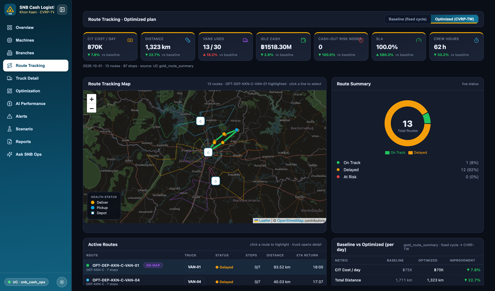

Replace a fixed 5-day replenishment calendar with a daily, demand-driven plan for 679 cash points across Khon Kaen.
SNB replenishes 159 branches, 400 ATMs and 120 cash-recycling machines from 3 cash centres with 30 armoured vans, every 5 days, whatever the demand.
Vans visit machines that are still mostly full because "it's day 5".
Fuel · crew hours · wearPayday and holiday spikes empty ATMs before the next visit.
Lost fees · complaints · trustCassettes and vaults overstocked "just in case".
Non-earning floatSame sequence every cycle; overruns opening windows.
Excess km · overtime@champion · Serving snb-cash-forecastdispatch_overridessnb-cash-route · map, KPIs, re-forecast, overrides, Genie chatEach stage consumes the previous stage's governed output. Nothing is copied out of Unity Catalog.
Packaged as one Databricks Asset Bundle: pipeline, job and app defined as code in the repo.
Serverless everywhere: pipeline, jobs, SQL warehouse, model serving (scale to zero), Lakebase Autoscaling.
snb_pii_readerscash_demand_forecast@champion served on snb-cash-forecast; the App's re-forecast calls the same endpoint
Cost, km, vans, idle cash, cash-out risk, SLA, crew hours from gold_route_summary.
Toggle fixed cycle vs optimized; click a route to see its stops.
Calls the serving endpoint for a 7-day P80 on any machine.
Skip, add, resequence or emergency; written to Lakebase.
Embedded Genie chat over the same governed tables.
lb_node_status (679 rows) and lb_route_stops (232 rows) give the App millisecond readsdispatch_overrides: SKIP / ADD / RESEQUENCE / EMERGENCY, with reason and authorgold_replenishment_orders · masks and row filters still applySix benchmark questions with generated SQL and answers are committed in evidence/genie_benchmarks.txt.
App KPI cards: cost per day, km, vans, cash-out risk, SLA.
"Which ATMs are at cash-out risk tomorrow, and which van covers them?"
Toggle BASELINE vs OPTIMIZED for 1 Oct 2026.
Pipeline graph and expectations → UC lineage, mask, row filter → MLflow run and endpoint.
A payday ATM: the serving endpoint returns a 7-day P80.
THB 1.5M a year and the pilot ask.
Skip a healthy stop with a reason; the row lands in Lakebase.
| Decision | Why | Trade-off |
|---|---|---|
| Declarative pipeline, not notebooks | Expectations, lineage, incremental by default | Less ad-hoc flexibility |
| One global LightGBM, not 679 models | Shares signal, handles new ATMs, one endpoint | Less per-node tuning |
| P80 quantile for replenishment | A cash-out costs more than a little extra cash | Some extra float carried |
| OR-Tools, 25 s per depot | Open source, explainable, fast | Not provably optimal |
| Lakebase synced tables for the App | Fast reads plus writable overrides | Snapshot freshness, not streaming |
| Genie agent mode, not a custom agent | Governed by UC, no prompt plumbing, fast to value | Less custom tool control |
| Serverless everywhere | No cluster ops, scale to zero for a once-a-day plan | Cold starts |
Full rationale in docs/decisions.md.
| Lever | Basis | Value |
|---|---|---|
| CIT operating cost | (baseline − optimized) cost per day × 365 | ≈ THB 1.5M a year |
| Idle cash | Float reduction across 679 nodes on the plan day | THB 43M released, plus carry cost avoided |
| Cash-out risk | Risk nodes per plan day, 64 → 0 | Fee income and complaints protected |
| Fleet | Vans 11 → 13 per day | Two extra crews take SLA from 15% → 100% |
Distance cost plus THB 2,500 per van-day; road km = straight-line × 1.3. Synthetic assumptions, re-validated on real SNB data in the pilot before any commitment.
The stack deploys from one bundle; a one-cash-centre pilot needs about 2 weeks of feed setup, then 30 CIT days of measurement.
Khon Kaen Central cash centre; real ATM switch, vault and CIT feeds under the same silver contract.
All 3 cash centres; nightly plan plus a mid-morning re-forecast on payday.
IdP groups for row filters, maker-checker on overrides, CI/CD for the bundle, model monitoring, road-network travel times.
Denomination mix, vault planning, CIT vendor SLAs, other regions.
Khon Kaen Central, measured against the fixed cycle on the same nodes.
Next step: a 2-hour working session with Cash Ops and IT Security to scope the pilot data feeds.
Repo: https://github.com/nan-databricks/fe-bar-cash-route